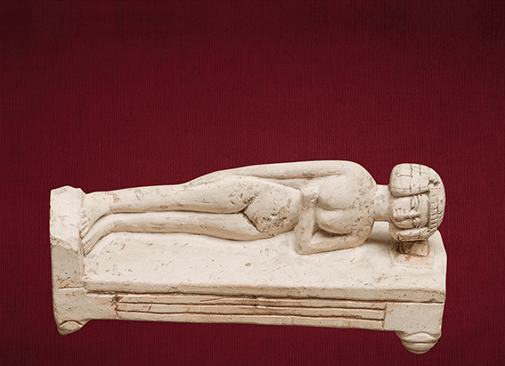
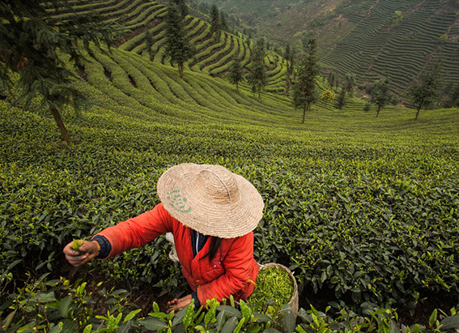

NATIONAL GEOGRAPHIC
Struggle for voting rights continues 58 years after historic March on Washington
HISTORY & CULTURE
Terry G. Collins is no stranger to peaceful protest. The Birmingham, Alabama native visited churches with his parents as a child where civil rights leaders talked about challenging injustices. In 1963, at 15 years old, he was subject to attacks by police dogs and was sprayed by fire hoses while participating in civil rights marches. Some of his friends were arrested.
Now 73, Collins traveled to Washington D.C. on the 58th anniversary of Martin Luther King, Jr.’s March on Washington for Jobs and Freedom, to advocate for voting rights. Saturday’s March On for Voting Rights included demonstrations from Atlanta, Georgia to Salt Lake City, Utah to draw attention to recent voting legislation that many Americans believe suppresses voting, particularly for non white and young American voters.
Collins believes that peaceful protest is the way to drive change, and if he and others had not protested in 1963 the laws enacted following those events wouldn’t have passed.
“If it had not been for the marches in Birmingham in 1963, the Civil Rights Act never would have been an act,” Collins says. “The 1964 and 65 civil rights and voting rights acts would never have been had it not been for the marches that occurred in Birmingham and in Selma and places like that, that demonstrated against the injustices that were ongoing as a part of the times and are still prevalent in our country.”
In 2021, 18 states have enacted 30 new laws that restrict voter access. The laws establish harsher voter ID requirements and make mail-in voting and early voting more challenging, among other restrictions.
Voting rights advocates expressed support for the John R. Lewis Voting Rights Advancement Act, named for the congressman and civil rights leader who died last year, which was passed by the U. S. House of Representatives on August 24th. The bill would restore the full protections of the original, bipartisan Voting Rights Act of 1965, which was last reauthorized by Congress in 2006, but reconstructed by the U. S. Supreme Court in 2013. Those protesting say the Supreme Court’s 2013 ruling has contributed to voter restrictions.
Participants included family members of both King and Lewis, the youngest organizer of the 1963 March on Washington, and the brothers of George Floyd whose murder by Minneapolis police in 2020 sparked global protests. Natacha Chavez, the granddaughter-in-law of civil rights activist Cesar Chavez attended the Phoenix march with her husband Alejandro, and their two children Amelia, and Alejandro.
“We want to carry on that legacy, and we see that Cesar’s fight and Martin Luther King’s fight aren't over,” Chavez said. “And not just those two, there's plenty of others during that time period who were working together with them like John Lewis. We need to finish their work.”
From Phoenix to Miami, Saturday’s peaceful protests united people from different backgrounds for a common cause.
Matthew Yatsayte, 25, a Navajo and Zuni voting activist who participated in the Phoenix event, said he was inspired by the range of voices represented.
History of voting rights efforts
The battle for voting rights has been an ongoing part of American history. Following the Declaration of Independence in 1776, white male property owners over the age of 21 were the only eligible voters. By 1787, the U.S. Constitution gave states the power to set voting mandates, which excluded women, African Americans, and Native Americans. Some white men also were excluded from voting based on property ownership requirements.
More than a century later, the 15th Amendment was passed by Congress in 1869 and ratified in 1870, prohibiting the federal government or states from denying American citizens the right to vote based on "race, color, or previous condition of servitude." Nevertheless, many forms of voter suppression would continue including poll taxes, literacy tests, fraud, and intimidation. Native Americans were still denied the right to vote.
Though Black men had the right to vote despite the challenges that came with it, women, including white women, weren’t allowed to vote until the passage of the 19th Amendment in 1920 , which stated, “The right of citizens of the United States to vote shall not be denied or abridged by the United States or by any State on account of sex.” Despite the 19th Amendment, many non-white women faced voter discrimination when going to the polls.
In 1924, Congress enacted the Indian Citizenship Act, which granted citizenship to all Native Americans born in the U.S. The right to vote, however, would be granted by states and many Native Americans in some states would not be allowed the right to vote until the late 1950s.
Comments :
- john Very good
- john Very good
Leave a Reply
Your email address will not be published. Required fields are marked*
Related posts:
-
The world's oldest nightmare came from Egypt. What hidden meanings did it hold
Falling. Being chased by monsters. Showing up to school naked. These may be common common scary dreams today, but the world's oldest nightmare was a lot less action packed. The 4,000-year-old Egyptian
View article -
 China’s beloved drunken poet died centuries ago or did he
China’s beloved drunken poet died centuries ago or did heBorn in 701, Li Bai famously began composing verse at age 10, trained as master swordsman in his teens (fatally dispatching several opponents in duels), and spent much of his Byronic life wandering the Chinese countryside seeking
View article -
At a remote temple in China, a Kung Fu master keeps the past alive
The hill was corduroyed in green hedgerows of Camilla sinesis, the tree first domesticated to please the palates of tea drinkers some 3,000 years ago. The sword belonged to Yu Chengzhang. Uncle Yu was a martial artist
View article